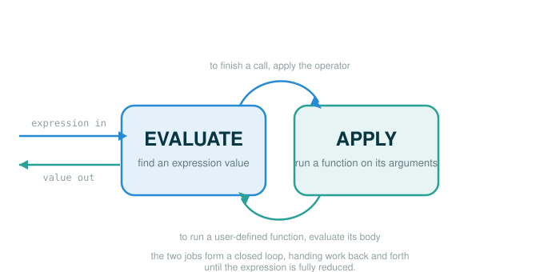

3.1 Programs, Languages, and Interpreters
This lesson opens Chapter 3, and it changes what you think a program is. By the end of it you will be able to do five things: say what a program actually is and why text alone does nothing, explain what an interpreter is and why it is "just another program," describe the two cooperating jobs at the heart of almost every interpreter (evaluation and application) and why they call each other, explain why this course introduces a second language, Scheme, to study interpretation, and start seeing yourself as a designer of languages rather than only a user of one.
You do not need to write a real interpreter today. You need one new habit: when you look at a piece of code, separate the inert text on the page from the process that gives that text meaning. Those are two different things, and keeping them apart is the whole chapter.
The Recipe Card That Cannot Cook
Picture a recipe card sitting on a kitchen counter.
mix flour and water
bake for 20 minutes
serve warmThe card holds instructions, but the card cannot cook. Nothing happens until a cook reads the card, understands what each line means in a real kitchen, and performs the steps in order. The card is information. The cooking is a process. The process is what turns the information into a finished dish.
A program works the same way. A file might contain these characters:
2 + 3Those characters do not add themselves. They sit there as text. A Python interpreter has to read the characters, recognize them as a Python expression, follow Python's rules for what addition means, and only then produce 5. The characters are the recipe card. The interpreter is the cook.
This chapter studies the cook. More precisely, it studies interpreters: programs whose entire purpose is to read other programs and give them meaning.
From Characters to Computation
The original text makes a sharp claim worth stating plainly: a Python program is just a collection of text, and only through the process of interpretation do we perform any meaningful computation based on that text. So it helps to picture the path from text to result as a sequence of stages.
source text -> parsed structure -> evaluation rules -> resultEach stage does real work.
- Source text is the actual characters the programmer typed.
- Parsed structure is the interpreter's organized representation of those characters, grouped so their structure is clear.
- Evaluation rules tell the interpreter what each piece of structure means.
- The result is the value or effect produced by following those rules.
We can watch this distinction in Python itself. Start with the smallest possible version: store some characters, then ask Python what kind of thing they are.
# (1)
source_text = "2 + 3"
print(source_text)
print(type(source_text).__name__)
Expected output:
2 + 3
strSo far Python is treating 2 + 3 purely as text. It prints the characters, and it reports their type as str, short for string — a value that is a sequence of characters. No addition has happened.
Now add one line that crosses the bridge from text to computation. The built-in function eval hands a string to Python's interpreter and says "treat these characters as a Python expression and compute its value."
# (2)
source_text = "2 + 3"
print(source_text)
print(type(source_text).__name__)
print(eval(source_text))
Expected output:
2 + 3
str
5The first two printed lines are unchanged: text, then its type. The third line is the new idea. eval(source_text) does not print the characters; it interprets them, and the addition finally happens, producing 5.
A safety note, not a recommendation: in real programs eval must be used with great care, because interpreting arbitrary text can run code you did not intend. The takeaway here is not "use eval." The takeaway is the idea it exposes — the same characters can be data (a string you store and pass around) right up until an interpreter assigns them meaning.
Following the line: eval(source_text)
Read this one line the way Python does, one token at a time. The final row is what the whole line produces.
eval(source_text)
├─ eval .......... the built-in interpreter function: read text as a Python expression
├─ ( ............. begins the input
├─ source_text ... the name bound to the string "2 + 3"
├─ ) ............. ends the input
└─ evaluates to .. 5 (the value of interpreting the string "2 + 3")So the same visible characters can play two roles in the same program:
"2 + 3" as data -> a string: five characters stored as text
2 + 3 as expression -> an addition the interpreter evaluates to 5Chapter 3 is built on that shift. Once a program can be treated as data, another program can read it, inspect it, transform it, and run it.
What Chapters 1 and 2 Prepared You For
The original text frames this chapter as the third in a series of fundamental elements. It is worth seeing the arc, because Chapter 3 combines the first two.
Chapter 1 studied functions — and showed that functions can be treated as data themselves, passed around and returned by higher-order functions.
inputs -> function -> outputChapter 2 studied data — and showed that data can be given behavior, through message passing and an object system, and organized through data abstraction, class inheritance, and generic functions.
parts -> representation -> abstract valueChapter 3 adds the third element: programs themselves. The key move is to notice that an interpreter is a program built out of functions, and the program it reads is just data. Put those together and you can write a program whose input is another program.
program text -> interpreter -> behaviorThis is one of the most powerful ideas in computer science. Once programs are data, you can analyze them, transform them, run them, debug them, and even design brand-new languages.
You Are Already a Language Designer
The original text says that appreciating this idea should change how you see yourself: not only a user of languages designed by others, but a designer of languages. You have been doing a small version of this all along.
Every time you choose names, write a helper function, define a class, or design an interface, you are shaping a small language that the rest of your program speaks. Consider what happens the moment you define a function.
# (3)
def square(x):
return x * x
print(square(5))
Expected output:
25Before this definition ran, the word square meant nothing to Python. After it runs, square(5) is a meaningful expression in your program. You did not modify Python itself, but you expanded the vocabulary available inside your program. That is language design in miniature, and Chapter 3 scales it up until you can give meaning to an entire small language of your own.
Programming Languages, and Why Scheme
The original text points out that programming languages vary widely in their syntax, their features, and the problems they are built for. Among general-purpose languages, two constructs show up almost everywhere: function definition and function application. Defining a function and then calling it is so common that it is easy to assume every language must have a long list of features to be useful.
It does not. Powerful languages exist that leave out an object system, higher-order functions, assignment, and even control constructs such as while and for statements. As an example of a powerful language with a deliberately minimal set of features, this course introduces Scheme. One detail matters for everything that follows: the subset of Scheme used in this text does not allow mutable values at all — that is, nothing you create can be changed after it is made; you can only build new values, never alter an existing one in place.
Why study a smaller language to understand interpreters? Because Python carries a lot at once:
- assignment
- mutation
- objects and classes
- loops
- exceptions
- modules
Every one of those features is useful, and none of them is a mistake. But each one is also a rule the interpreter must implement, and trying to understand all of them at the same time hides the central machinery. Scheme strips the language down to a small core, so the fundamental rules of interpretation stand out with far fewer moving parts. Removing assignment, mutation, objects, and loops is not a claim that those ideas do not matter; it is a way to see the heart of an interpreter clearly before adding features back.
Here is a first glimpse of the shape Scheme uses. Do not try to master it yet — 3.2 teaches Scheme properly. For now, just notice where the operator sits.
(+ 2 3)In Python, the operator for addition usually sits between its operands:
2 + 3In Scheme, the operator comes first, inside parentheses, followed by its operands:
(operator operand operand)Both forms can describe the very same computation — add two and three. They simply follow different language rules, and recognizing which rules apply is exactly the interpreter's job.
The Two Jobs at the Heart of an Interpreter
Designing an interpreter for a general programming language can sound daunting. An interpreter can carry out any computation at all, depending on what program it is given. Yet the original text points out that many interpreters share an elegant common structure: two mutually recursive functions. One evaluates expressions in environments; the other applies functions to arguments. Call them the evaluator and the applicator.
The diagram below shows how these two jobs hand work back and forth in a continuous loop.

Evaluation answers one question:
What value does this expression produce?Application answers a different one:
What happens when this function is applied to these argument values?The reason they are described as mutually recursive is that each is defined in terms of the other. Applying a function requires evaluating the expressions in that function's body. Evaluating an expression may, in turn, require applying one or more functions. Neither job is complete on its own; they hand work back and forth.
Here is that loop stated intuitively:
To evaluate a call expression, evaluate its parts and then apply the operator.
To apply a user-defined function, evaluate the expressions in its body.The evaluator asks the applicator for help; the applicator turns around and asks the evaluator for help. That back-and-forth is the core motion of an interpreter, and the rest of this chapter is, in large part, making that motion precise.
A Tiny Evaluator You Can Read
The following Python program is not a real interpreter, and it is not Scheme. It is a small model in Python whose only purpose is to make the evaluator-and-applicator relationship concrete enough to step through. Reading it now will make the full interpreters later in the chapter feel familiar.
In this model, an expression is represented as a Python tuple, and a name is represented as a string.
("+", 2, 3) means: add 2 and 3
("double", 5) means: apply a tiny user-defined function named double to 5Before the full version, here is the smallest possible warm-up: an evaluator that handles only literal numbers and a single built-in, addition. Notice how evaluate figures out the value of the parts and then defers the actual + to apply.
# (4)
def evaluate(expression):
if isinstance(expression, int):
return expression
operator = expression[0]
operands = expression[1:]
values = [evaluate(operand) for operand in operands]
return apply(operator, values)
def apply(operator, values):
if operator == "+":
return values[0] + values[1]
raise ValueError(operator)
print(evaluate(("+", 2, 3)))
Expected output:
5That already shows the split: evaluate recognizes the structure and evaluates the operands, then apply performs the operation. What it does not yet show is the mutual recursion, because a built-in like + does not send any work back to the evaluator. A user-defined function does. So now extend the model with a function named double, defined as adding a name to itself, and an environment — a small table that records what each name means while a function runs.
In this stripped-down model, every user-defined function takes exactly one input, always named x, so the body ("+", "x", "x") means "add the input to itself." When apply runs the function it binds that name x to the actual argument.
# (5)
definitions = {
"double": ("+", "x", "x")
}
def evaluate(expression, env):
if isinstance(expression, int):
return expression
if isinstance(expression, str):
return env[expression]
operator = expression[0]
operands = expression[1:]
values = [evaluate(operand, env) for operand in operands]
return apply(operator, values, env)
def apply(operator, values, env):
if operator == "+":
return values[0] + values[1]
if operator == "double":
new_env = {"x": values[0]}
return evaluate(definitions["double"], new_env)
raise ValueError(operator)
print(evaluate(("+", ("double", 3), 4), {}))
Expected output:
10Following the line: evaluate(("+", ("double", 3), 4), {})
Read the final call one token at a time. The final row is the value it produces.
evaluate(("+", ("double", 3), 4), {})
├─ evaluate ................ the evaluator function
├─ ( ...................... begins the inputs
├─ ("+", ("double", 3), 4) the expression: add double(3) to 4
├─ , ...................... separates the inputs
├─ {} ..................... the starting environment, with no names bound yet
├─ ) ...................... ends the inputs
└─ evaluates to ........... 10Step the block above and watch the back-and-forth that produces 10. The thing to notice is the moment apply handles "double": it builds a small environment binding x to 3 and hands the body ("+", "x", "x") back to evaluate, where both "x" lookups read from that environment. That hand-off from applying back to evaluating is the mutual recursion in action.
That is the loop the whole chapter is about:
evaluate -> apply -> evaluate -> applyAnd the final result is 10.
What an Interpreter Must Know
An interpreter is only as good as the rules it carries for the language it interprets. At a minimum, it needs answers to questions like these:
- Which patterns of characters count as valid expressions?
- How are expressions grouped into structure?
- How are names looked up?
- How are call expressions evaluated?
- How are built-in operations applied?
- How are user-defined functions applied?
Those rules are the meaning of the language. Strip the rules away and source text is, once again, just text on a card that cannot cook.
⚠Common Beginner Traps
Trap 1: Thinking the text itself performs the computation. The text is inert. The interpreter performs the computation by following the language's rules.
Trap 2: Confusing a string with an expression. The string "2 + 3" is data; the expression 2 + 3 is something the interpreter evaluates. They look almost identical on screen, but the interpreter treats them as different kinds of thing.
Trap 3: Treating Scheme as a random extra language to memorize. Scheme is introduced because a small language makes the structure of an interpreter easy to see. The goal is not to replace Python; it is to understand programming languages more deeply.
Trap 4: Thinking evaluation and application are the same step. Evaluation finds the value of an expression. Application uses a function on argument values. They cooperate constantly, but they are different jobs, and seeing them as separate is what makes the rest of the chapter readable.
Trap 5: Expecting mutation in the Scheme used here. The subset of Scheme in this text does not allow mutable values at all, so do not look for the assignment-and-change patterns you know from Python yet.
✓Check Your Understanding
- Using the tiny evaluator model, what value does
evaluate(("double", ("double", 4)), {})produce, and roughly how does the evaluate-apply loop get there? - What extra step happens when Python evaluates
eval("2 + 3")that does not happen when it merely prints the string? - In the tiny evaluator model, why does applying
"double"callevaluateagain? - Why does this course introduce Scheme to study interpreters instead of using Python the whole way?
- What does it mean to say an interpreter is "just another program," and why is that idea powerful?
Show the answers
- It produces
16. The evaluator sees the outer call("double", ("double", 4))and asks the applicator to apply"double", but first it evaluates the operand("double", 4). That inner call applies"double"to4: it builds an environment withxbound to4and evaluates the body("+", "x", "x")to8. The outer"double"then builds an environment withxbound to8and evaluates the same body to16. - Printing only displays the characters.
evalhands the characters to Python's interpreter, which parses them as an expression and evaluates that expression to a value. - Applying
"double"produces a body expression,("+", "x", "x"), that still has to be evaluated in an environment wherexhas a value. Evaluating that body is the evaluator's job, so application calls evaluation. - Scheme is small enough that the central rules of interpretation are visible without also implementing Python's many extra features such as objects, loops, assignment, and mutation.
- It means the thing that determines the meaning of a language is itself a program you can read, write, and modify. That is powerful because once programs are data, you can analyze, transform, run, and even design languages rather than only use ones built by others.
§Summary
A program is text written according to the rules of a programming language, and text alone does nothing — only interpretation turns it into computation. An interpreter is a program that reads that text, organizes it into structure, and evaluates it by the language's rules, which means the thing that gives a language meaning is itself just another program. Chapter 3 builds on Chapters 1 and 2: an interpreter is made of functions, and the program it reads is data, so a program can take another program as input. Most interpreters share one elegant shape — two mutually recursive jobs, evaluation (find an expression's value in an environment) and application (apply a function to arguments) — that hand work back and forth. This course studies that shape using Scheme, a powerful language with a minimal feature set whose subset here has no mutable values, because a small language lets the core rules of interpretation stand out clearly.
▶Step-Through Checkpoint
The block below is the lesson's tiny evaluator model — a Python model of an interpreter, not a real one — driven by one new call. Stepping through it draws the environment diagram for the model itself: each evaluate and apply call opens its own frame, and when apply handles "double" it builds the dictionary new_env mapping "x" to an argument value, the very object the body's two "x" lookups read from. Before you step through it, write down three predictions: what value x is bound to in the environment apply builds when it handles "double", what the body ("+", "x", "x") evaluates to in that environment, and what number result holds when the last line finishes.
# (6)
definitions = {
"double": ("+", "x", "x")
}
def evaluate(expression, env):
if isinstance(expression, int):
return expression
if isinstance(expression, str):
return env[expression]
operator = expression[0]
operands = expression[1:]
values = [evaluate(operand, env) for operand in operands]
return apply(operator, values, env)
def apply(operator, values, env):
if operator == "+":
return values[0] + values[1]
if operator == "double":
new_env = {"x": values[0]}
return evaluate(definitions["double"], new_env)
raise ValueError(operator)
result = evaluate(("+", ("double", 5), 2), {})
Step through it one line at a time and check each prediction as it resolves. You should have seen evaluate receive the outer expression, then apply handle "double" by building new_env with x bound to 5, then apply hand the body ("+", "x", "x") straight back to evaluate, where both copies of "x" look up to 5 and the body evaluates to 10. The binding to watch is new_env: the two lookups happen in the evaluate calls that run the body inside that environment, not in the empty environment the run started with. The last line binds result to 12, and the route there is the evaluate-apply-evaluate-apply motion this whole chapter is built on.